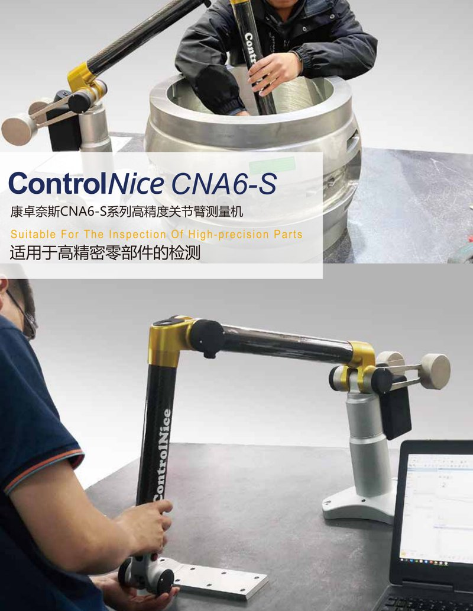
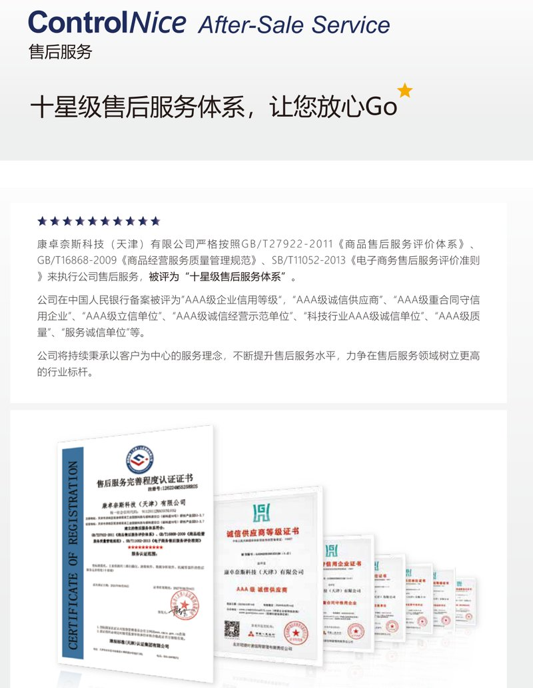
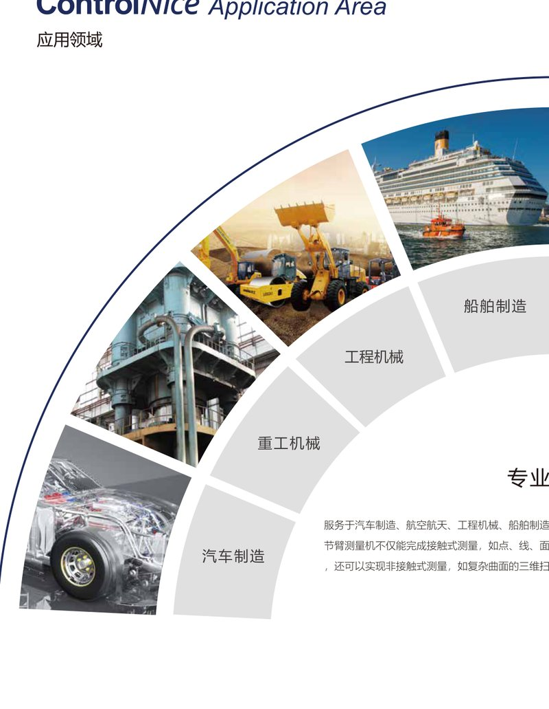

From compact workshop inspection to large-scale aerospace assembly — ControlNice offers a complete range of Articulated Arm CMMs and Portable Measurement Solutions.

ControlNice's Articulated Arm CMM combines large-scale reach with micron-level repeatability. Designed for demanding industrial environments, the AACMM series delivers lab-grade accuracy directly on the shop floor.

Take precision measurement to the part, not the part to the lab. ControlNice Portable CMM solutions enable accurate 3D inspection anywhere — on the production line, in the assembly bay, or at the supplier's facility.

Expand your measurement capabilities with ControlNice's comprehensive range of probes, sensors, and accessories.
Comprehensive backing for your metrology investment.
Comprehensive warranty coverage on all ControlNice products.
Worldwide calibration service to maintain ISO 10360 compliance.
On-site/online training and free software updates for product lifetime.
Find the right AACMM for your measurement challenge.
| Model | Range | Repeatability | Best For |
|---|---|---|---|
| AACMM-1200 | 1.2m | ≤ 0.008mm | Small parts, tool rooms |
| AACMM-2000 | 2.0m | ≤ 0.012mm | Automotive, general manufacturing |
| AACMM-3000 | 3.0m | ≤ 0.015mm | Aerospace, shipbuilding |
| AACMM-4500 | 4.5m | ≤ 0.020mm | Wind energy, large structures |
| Specification | ControlNice AACMM-4500 | Hexagon Absolute Arm 8545 |
|---|---|---|
| Max Range | 4.5m | 4.5m |
| Repeatability (at full range) | ≤ 0.020mm | ≤ 0.030mm |
| Precision Stability at Max Extension | Zero decay | ~15% increase in error |
| Warranty | 3 Years | 1 Year (standard) |
| Factory Calibration Included | Yes | Additional cost |
| Lead Time | 4-6 Weeks | 8-12 Weeks |
Three areas where ControlNice outperforms the industry standard.
Looking for a portable CMM? Get specs, pricing & compatibility in one click.
Instant Quote